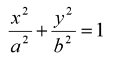
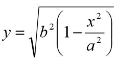
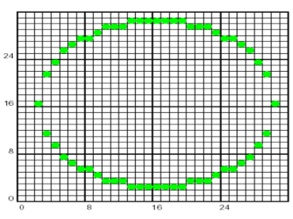

Katedra za računarstvo i informatiku
Tema: Rasterizacija elipse
Katedra za računarstvo i informatiku
Tema: Rasterizacija elipse
Polinomni algoritam
Matematička osnova
Krećemo od pretpostavke da se crta elipsa sa centrom u koordinatnom početku.
Trivijalan algoritam radi na osnovu jednačine elipse oblika:

Pri čemu, primenom transformacija, dobijamo y kao:

Kod ovog algoritma se, takođe, koristimo simetričnošću elipse, s tim što se ovde krećemo suprotno u odnosu na kazaljke na satu pri čemu je x koordinata u opsegu od 0 do a.
Pseudokod
U polju ispod je dat pseudokod za rasterizaciju elipse korišćenjem polinomnog algoritma.
1.a2=a*a;
2.for x=0; x < a; x++
3.y=b*sqrt(1-x*x/a2)+0.5;
4.WritePixel4(pDC, x,y,value);
5.endfor
Nedostaci
Nedostaci sa kojima se susrećemo ovde su sledeći:
a) Operacije sa realnim brojevima;
b) Ovaj algoritam daje veoma loš rezultat, kao što se može videti na slici ispod.
